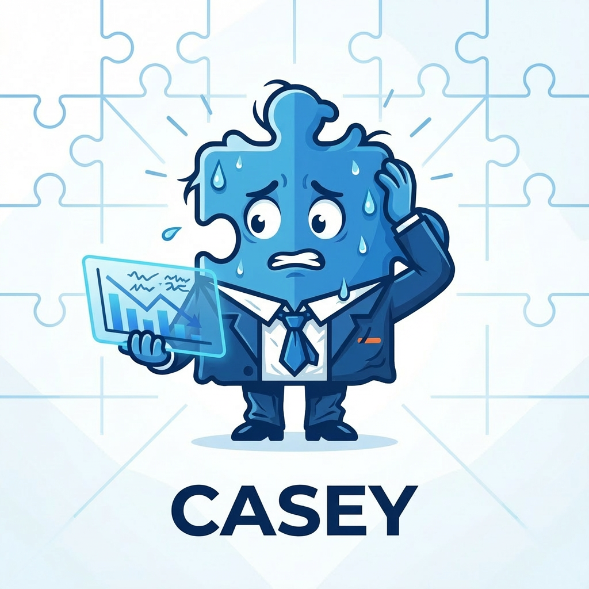
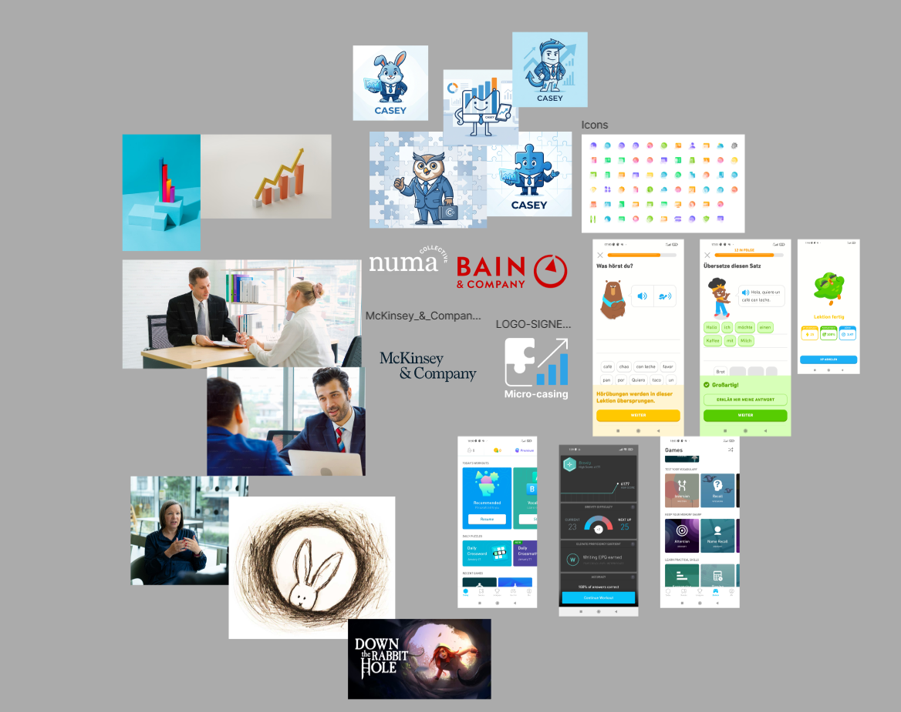
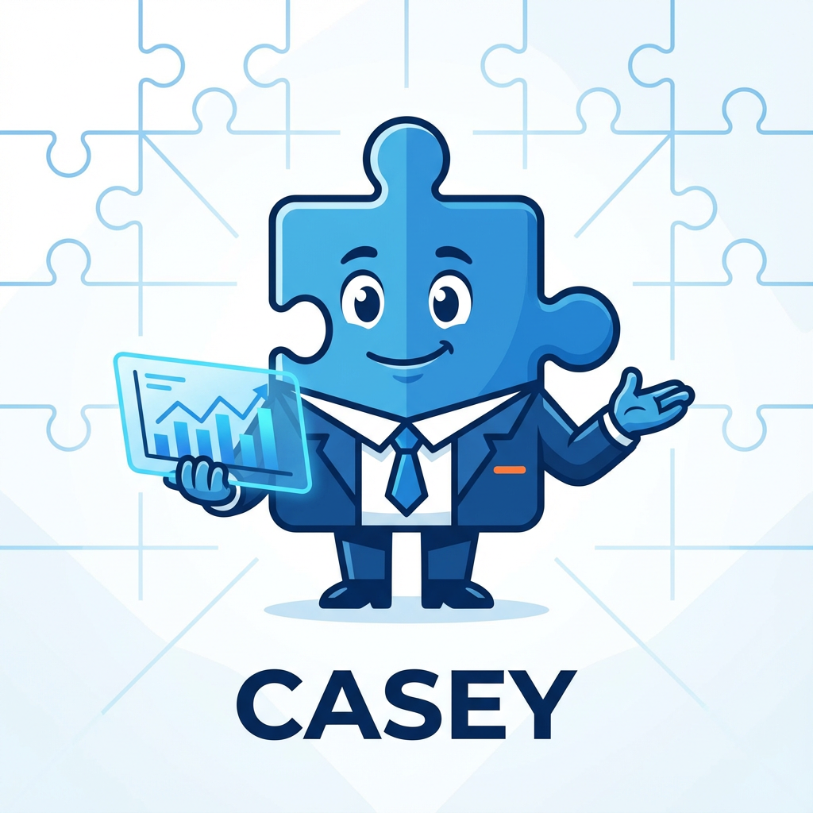
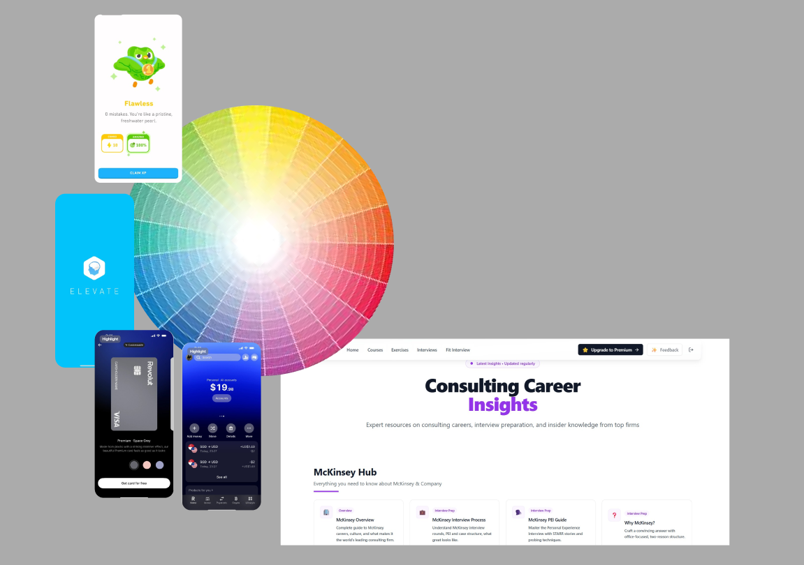
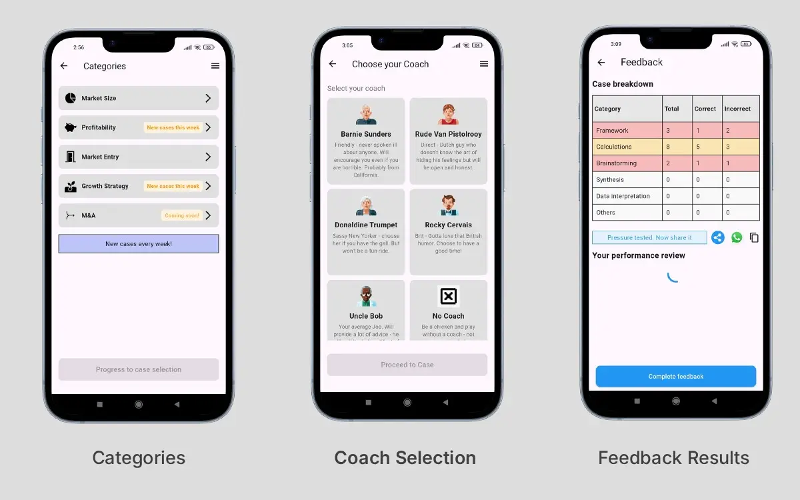
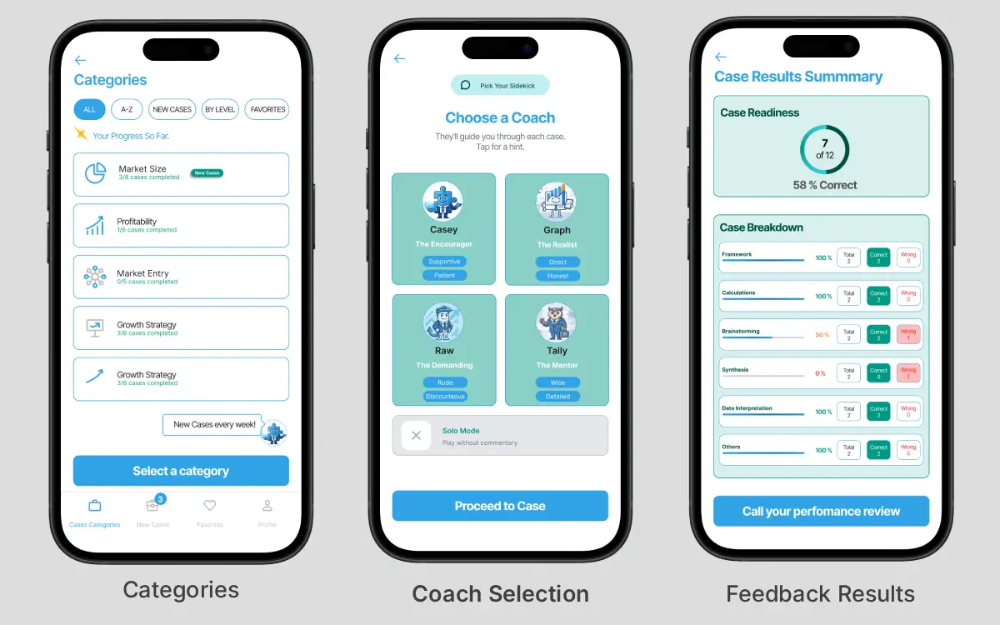

Defining the
Product System
and Brand Guide
Micro-casing had been built from AI-generated wireframes with no design system behind it. The UX audit mapped four specific failures, each one blocking a different part of the product.

Three Workstreams
One Foundation
Three parallel workstreams ran simultaneously to establish a strategic foundation before any design decision was made.
Branding Strategy
and UI Decisions
Defining the visual and gamification direction for the Micro-Casing app through competitive analysis and branding decisions.
Researching platforms such as Elevate and Duolingo helped identify successful engagement patterns used in gamified learning experiences. These references informed the comparative and competitive analysis during the discovery phase.

The insights gathered during research led to the decision to introduce coaching-oriented and gamified interactions into the Micro-Casing app. Progression systems, achievement-driven experiences, and guided learning mechanics became central to the product experience.

The discovery phase also shaped the branding strategy and UI direction. Blue was intentionally selected as the primary brand colour to link the product with existing fintech apps and gamification platforms.

Deliverables That
Unblocked the Team
The inherited file had no component logic, no prototype flows, and no consistent visual system. These three deliverables changed how the team worked.
Where It Got Hard
and How We Moved
From Fragmented
to Focused

Before: AI-generated wireframes
What was not working
- Fragmented visual hierarchy: cognitive overload across every screen
- No global navigation: users trapped in a single forced flow with no orientation
- Misaligned UX copy: gaming tone competing with consulting credibility
- No filtering or discovery system: unsustainable as the content library grew
- No component library: no foundation for consistent or scalable development

After: redesigned experience
What we improved
- Cohesive visual system: unified typography, hierarchy, and colour across all screens
- Global navigation bar: Office, Cases, New Cases, Favorites, and Profile always accessible
- Tone-aligned UX copy: Professional, Friendly, and Modern across every touchpoint
- Filtering system: by difficulty, category, and new releases supports content scaling
- Mini UI Kit: component library ready for immediate developer implementation
"I worked with Juan for my app's (Micro-casing) UX/UI design. Juan was very thorough and very professional, and I had a great time working with him. His discipline in learning about the customer journey in the industry related to the app was very much appreciated."
See it in
motion.
Happy Path
Full case flow from start to result
Error Path
Connection failure flow
One tool per
phase of the process
AI was not just one tool. Rather, it was a system of specialised tools, each of which was matched to a specific phase of the Design process.
What This Project
Taught Me
Results Since
February 2026
The redesign launched in February 2026 across the App Store and Google Play. The following metrics reflect real performance data from both platforms since release.